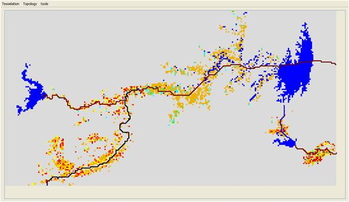

|
ABSTRACT (Agent Based Simulation Tool for Resource Allocation in a CatchmenT)P. van Oel With the ABSTRACT model the effect of rainfall patterns and water management interventions on spatiotemporal distribution of water resources availability and use in a catchment can be evaluated. The model is designed for basins with dams for water storage that serve a large irrigation sector. The model may be used to explore possibilities of multi-annual water allocation.Freshwater in a river basin is a common-pool resource (CPR) which is,
because of the nature of a river basin, asymmetric (Van Oel et al., 2009).
For a river basin which contains many water reservoirs one cannot speak
of a single resource stock, as is the case for an irrigation scheme with
one central reservoir. A river basin with multiple reservoirs is therefore
fundamentally different from a canal-irrigation system and should rather
be regarded as a system of nested or connected CPRs. Conflicts of interest
may exist at and between different levels on the river basin scale: A first application of the model has been implemented using survey data on farmers preferred land use in case of different water availability situations at the sub basin level of the Jaguaribe basin in Brazil (figure 1; figure 2; Van Oel, 2009; Van Oel et al., 2010). Currently we are working on modifying the model for studying basin closure and the effects of decentralization of water allocation management at the basin level. Model output includes water availability and water use at levels ranging
from local to the (sub) basin level. Model validation was partly done
using land use classifications from remotely-sensed data (figure
3) and is described in detail in Van Oel et al. (2010). SoftwareYou can download the Cormas model source code. References Van Oel, P.R. 2009. Water-Scarcity Patterns: spatiotemporal interdependencies
between water use and water availability in a semi-arid river basin. PhD
Thesis, University of Twente, Enschede, The Netherlands. For more information, contact the corresponding author
|